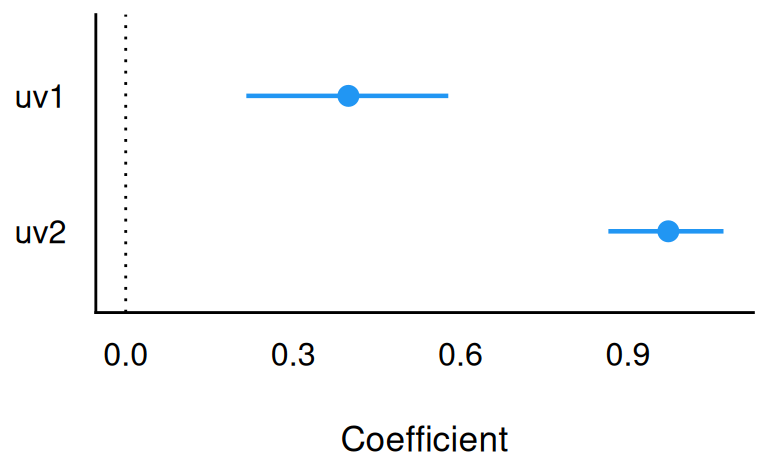

library(tidyverse)
library(easystats)
library(rstanarm)modellinterpret-beta
bayes
regression
dyn
paper
Question
Im Rahmen eines Beratungsprojekts in einer Marketingabtielung hat eine Analystin folgenden Datensatz untersucht: iris. Er ist unter dieser Quelle erhältlich: https://vincentarelbundock.github.io/Rdatasets/csv/datasets/iris.csv.
Hilfe zum Datensatz ist auf dieser Webseite abrufbar.
Im Rahmen ihrer Analyse hat sie folgendes lineares Modell berechnet:
AV: Sepal.Length.
UVs: Sepal.Width, Petal.Width.
Für diese Aufgabe wird ein Prädiktor aus der Menge der UV näher betrachtet. Der gewählte Prädiktor ist die erste oben genannte UV: Sepal.Width (uv1).
Aufgabe: Was ist der Punktschätzer des gewählten Regressionskoeffizienten? Identifizieren Sie diese Information aus dem angeführten Material!
Beachten Sie die Bearbeitungshinweise.
Hier sind im Folgenden die von der Analystin durchgeführten Schritte und deren Ergebnisse (R-Ausgaben) aufgeführt.
Entnehmen Sie aus daraus die relevanten Informationen zur Lösung der Aufgabe!
Pakete starten:
Daten importieren:
d <- read_csv('https://vincentarelbundock.github.io/Rdatasets/csv/datasets/iris.csv')
Daten aufbereiten:
d <-
d |>
select(av, uv1, uv2) |>
drop_na()Daten prüfen:
describe_distribution(d)| Variable | Mean | SD | IQR | Min | Max | Skewness | Kurtosis | n | n_Missing |
|---|---|---|---|---|---|---|---|---|---|
| av | 5.843333 | 0.8280661 | 1.300 | 4.3 | 7.9 | 0.3149110 | -0.552064 | 150 | 0 |
| uv1 | 3.057333 | 0.4358663 | 0.525 | 2.0 | 4.4 | 0.3189657 | 0.228249 | 150 | 0 |
| uv2 | 1.199333 | 0.7622377 | 1.500 | 0.1 | 2.5 | -0.1029667 | -1.340604 | 150 | 0 |
Modell berechnen:
Allgemein:
mod <- stan_glm(av ~ uv1 + uv2,
data = d,
seed = 42)Konkret:
mod <- stan_glm(Sepal.Length ~ Sepal.Width + Petal.Width, data = d, seed = 42)
plot(parameters(mod))
parameters(mod)| Parameter | Median | CI | CI_low | CI_high | pd | Rhat | ESS_tail | Prior_Distribution | Prior_Location | Prior_Scale |
|---|---|---|---|---|---|---|---|---|---|---|
| (Intercept) | 3.4606269 | 0.95 | 2.8535199 | 4.0807546 | 1 | 0.9994652 | 2451 | normal | 5.843333 | 2.070165 |
| uv1 | 0.3990555 | 0.95 | 0.2161139 | 0.5780044 | 1 | 0.9993841 | 2516 | normal | 0.000000 | 4.749542 |
| uv2 | 0.9723252 | 0.95 | 0.8648793 | 1.0711832 | 1 | 1.0003844 | 2212 | normal | 0.000000 | 2.715905 |
r2(mod)# Bayesian R2 with Compatibility Interval
Conditional R2: 0.702 (95% CI [0.635, 0.767])plot(rope(mod))rope(mod)| Parameter | CI | ROPE_low | ROPE_high | ROPE_Percentage | Effects | Component |
|---|---|---|---|---|---|---|
| (Intercept) | 0.95 | -0.0828066 | 0.0828066 | 0 | fixed | conditional |
| uv1 | 0.95 | -0.0828066 | 0.0828066 | 0 | fixed | conditional |
| uv2 | 0.95 | -0.0828066 | 0.0828066 | 0 | fixed | conditional |
pd(mod)| Parameter | pd | Effects | Component |
|---|---|---|---|
| (Intercept) | 1 | fixed | conditional |
| uv1 | 1 | fixed | conditional |
| uv2 | 1 | fixed | conditional |
coef(mod)(Intercept) uv1 uv2
3.4606269 0.3990555 0.9723252 summary(mod)
Model Info:
function: stan_glm
family: gaussian [identity]
formula: av ~ uv1 + uv2
algorithm: sampling
sample: 4000 (posterior sample size)
priors: see help('prior_summary')
observations: 150
predictors: 3
Estimates:
mean sd 10% 50% 90%
(Intercept) 3.5 0.3 3.0 3.5 3.9
uv1 0.4 0.1 0.3 0.4 0.5
uv2 1.0 0.1 0.9 1.0 1.0
sigma 0.5 0.0 0.4 0.5 0.5
Fit Diagnostics:
mean sd 10% 50% 90%
mean_PPD 5.8 0.1 5.8 5.8 5.9
The mean_ppd is the sample average posterior predictive distribution of the outcome variable (for details see help('summary.stanreg')).
MCMC diagnostics
mcse Rhat n_eff
(Intercept) 0.0 1.0 3555
uv1 0.0 1.0 3765
uv2 0.0 1.0 3725
sigma 0.0 1.0 4353
mean_PPD 0.0 1.0 3652
log-posterior 0.0 1.0 1666
For each parameter, mcse is Monte Carlo standard error, n_eff is a crude measure of effective sample size, and Rhat is the potential scale reduction factor on split chains (at convergence Rhat=1).predict(mod, newdata = data.frame(uv1 = 1, uv2 = 1)) 1
4.829864 estimate_relation(mod, data = data.frame(
uv1 = seq(min(d$uv1), max(d$uv1), length.out = 5),
uv2 = seq(min(d$uv1), max(d$uv2), length.out = 5))
)| uv1 | uv2 | Predicted | SE | CI_low | CI_high |
|---|---|---|---|---|---|
| 2.0 | 2.000 | 6.199867 | 0.1003012 | 6.002890 | 6.396914 |
| 2.6 | 2.125 | 6.560459 | 0.0650470 | 6.435104 | 6.687633 |
| 3.2 | 2.250 | 6.921051 | 0.0721670 | 6.781035 | 7.062757 |
| 3.8 | 2.375 | 7.281644 | 0.1139790 | 7.055672 | 7.499470 |
| 4.4 | 2.500 | 7.642236 | 0.1660739 | 7.312765 | 7.960334 |
mod_post <-
mod |>
as_tibble()
mod_post |>
count(uv1 > 0) |>
mutate(prop = n/sum(n))| uv1 > 0 | n | prop |
|---|---|---|
| TRUE | 4000 | 1 |
prior_summary(mod)Priors for model 'mod'
------
Intercept (after predictors centered)
Specified prior:
~ normal(location = 5.8, scale = 2.5)
Adjusted prior:
~ normal(location = 5.8, scale = 2.1)
Coefficients
Specified prior:
~ normal(location = [0,0], scale = [2.5,2.5])
Adjusted prior:
~ normal(location = [0,0], scale = [4.75,2.72])
Auxiliary (sigma)
Specified prior:
~ exponential(rate = 1)
Adjusted prior:
~ exponential(rate = 1.2)
------
See help('prior_summary.stanreg') for more detailsz-standardisierte Daten:
d_z <- standardize(d)describe_distribution(d_z)| Variable | Mean | SD | IQR | Min | Max | Skewness | Kurtosis | n | n_Missing |
|---|---|---|---|---|---|---|---|---|---|
| av | 0 | 1 | 1.569923 | -1.863780 | 2.483699 | 0.3149110 | -0.552064 | 150 | 0 |
| uv1 | 0 | 1 | 1.204498 | -2.425820 | 3.080455 | 0.3189657 | 0.228249 | 150 | 0 |
| uv2 | 0 | 1 | 1.967890 | -1.442245 | 1.706379 | -0.1029667 | -1.340604 | 150 | 0 |
mod_z <- stan_glm(av ~ uv1 + uv2,
data = d,
seed = 42)
SAMPLING FOR MODEL 'continuous' NOW (CHAIN 1).
Chain 1:
Chain 1: Gradient evaluation took 1.4e-05 seconds
Chain 1: 1000 transitions using 10 leapfrog steps per transition would take 0.14 seconds.
Chain 1: Adjust your expectations accordingly!
Chain 1:
Chain 1:
Chain 1: Iteration: 1 / 2000 [ 0%] (Warmup)
Chain 1: Iteration: 200 / 2000 [ 10%] (Warmup)
Chain 1: Iteration: 400 / 2000 [ 20%] (Warmup)
Chain 1: Iteration: 600 / 2000 [ 30%] (Warmup)
Chain 1: Iteration: 800 / 2000 [ 40%] (Warmup)
Chain 1: Iteration: 1000 / 2000 [ 50%] (Warmup)
Chain 1: Iteration: 1001 / 2000 [ 50%] (Sampling)
Chain 1: Iteration: 1200 / 2000 [ 60%] (Sampling)
Chain 1: Iteration: 1400 / 2000 [ 70%] (Sampling)
Chain 1: Iteration: 1600 / 2000 [ 80%] (Sampling)
Chain 1: Iteration: 1800 / 2000 [ 90%] (Sampling)
Chain 1: Iteration: 2000 / 2000 [100%] (Sampling)
Chain 1:
Chain 1: Elapsed Time: 0.013 seconds (Warm-up)
Chain 1: 0.021 seconds (Sampling)
Chain 1: 0.034 seconds (Total)
Chain 1:
SAMPLING FOR MODEL 'continuous' NOW (CHAIN 2).
Chain 2:
Chain 2: Gradient evaluation took 4e-06 seconds
Chain 2: 1000 transitions using 10 leapfrog steps per transition would take 0.04 seconds.
Chain 2: Adjust your expectations accordingly!
Chain 2:
Chain 2:
Chain 2: Iteration: 1 / 2000 [ 0%] (Warmup)
Chain 2: Iteration: 200 / 2000 [ 10%] (Warmup)
Chain 2: Iteration: 400 / 2000 [ 20%] (Warmup)
Chain 2: Iteration: 600 / 2000 [ 30%] (Warmup)
Chain 2: Iteration: 800 / 2000 [ 40%] (Warmup)
Chain 2: Iteration: 1000 / 2000 [ 50%] (Warmup)
Chain 2: Iteration: 1001 / 2000 [ 50%] (Sampling)
Chain 2: Iteration: 1200 / 2000 [ 60%] (Sampling)
Chain 2: Iteration: 1400 / 2000 [ 70%] (Sampling)
Chain 2: Iteration: 1600 / 2000 [ 80%] (Sampling)
Chain 2: Iteration: 1800 / 2000 [ 90%] (Sampling)
Chain 2: Iteration: 2000 / 2000 [100%] (Sampling)
Chain 2:
Chain 2: Elapsed Time: 0.013 seconds (Warm-up)
Chain 2: 0.018 seconds (Sampling)
Chain 2: 0.031 seconds (Total)
Chain 2:
SAMPLING FOR MODEL 'continuous' NOW (CHAIN 3).
Chain 3:
Chain 3: Gradient evaluation took 4e-06 seconds
Chain 3: 1000 transitions using 10 leapfrog steps per transition would take 0.04 seconds.
Chain 3: Adjust your expectations accordingly!
Chain 3:
Chain 3:
Chain 3: Iteration: 1 / 2000 [ 0%] (Warmup)
Chain 3: Iteration: 200 / 2000 [ 10%] (Warmup)
Chain 3: Iteration: 400 / 2000 [ 20%] (Warmup)
Chain 3: Iteration: 600 / 2000 [ 30%] (Warmup)
Chain 3: Iteration: 800 / 2000 [ 40%] (Warmup)
Chain 3: Iteration: 1000 / 2000 [ 50%] (Warmup)
Chain 3: Iteration: 1001 / 2000 [ 50%] (Sampling)
Chain 3: Iteration: 1200 / 2000 [ 60%] (Sampling)
Chain 3: Iteration: 1400 / 2000 [ 70%] (Sampling)
Chain 3: Iteration: 1600 / 2000 [ 80%] (Sampling)
Chain 3: Iteration: 1800 / 2000 [ 90%] (Sampling)
Chain 3: Iteration: 2000 / 2000 [100%] (Sampling)
Chain 3:
Chain 3: Elapsed Time: 0.013 seconds (Warm-up)
Chain 3: 0.018 seconds (Sampling)
Chain 3: 0.031 seconds (Total)
Chain 3:
SAMPLING FOR MODEL 'continuous' NOW (CHAIN 4).
Chain 4:
Chain 4: Gradient evaluation took 8e-06 seconds
Chain 4: 1000 transitions using 10 leapfrog steps per transition would take 0.08 seconds.
Chain 4: Adjust your expectations accordingly!
Chain 4:
Chain 4:
Chain 4: Iteration: 1 / 2000 [ 0%] (Warmup)
Chain 4: Iteration: 200 / 2000 [ 10%] (Warmup)
Chain 4: Iteration: 400 / 2000 [ 20%] (Warmup)
Chain 4: Iteration: 600 / 2000 [ 30%] (Warmup)
Chain 4: Iteration: 800 / 2000 [ 40%] (Warmup)
Chain 4: Iteration: 1000 / 2000 [ 50%] (Warmup)
Chain 4: Iteration: 1001 / 2000 [ 50%] (Sampling)
Chain 4: Iteration: 1200 / 2000 [ 60%] (Sampling)
Chain 4: Iteration: 1400 / 2000 [ 70%] (Sampling)
Chain 4: Iteration: 1600 / 2000 [ 80%] (Sampling)
Chain 4: Iteration: 1800 / 2000 [ 90%] (Sampling)
Chain 4: Iteration: 2000 / 2000 [100%] (Sampling)
Chain 4:
Chain 4: Elapsed Time: 0.014 seconds (Warm-up)
Chain 4: 0.019 seconds (Sampling)
Chain 4: 0.033 seconds (Total)
Chain 4: parameters(mod_z)| Parameter | Median | CI | CI_low | CI_high | pd | Rhat | ESS_tail | Prior_Distribution | Prior_Location | Prior_Scale |
|---|---|---|---|---|---|---|---|---|---|---|
| (Intercept) | 3.4606269 | 0.95 | 2.8535199 | 4.0807546 | 1 | 0.9994652 | 2451 | normal | 5.843333 | 2.070165 |
| uv1 | 0.3990555 | 0.95 | 0.2161139 | 0.5780044 | 1 | 0.9993841 | 2516 | normal | 0.000000 | 4.749542 |
| uv2 | 0.9723252 | 0.95 | 0.8648793 | 1.0711832 | 1 | 1.0003844 | 2212 | normal | 0.000000 | 2.715905 |
plot(parameters(mod_z))
coef(mod_z)(Intercept) uv1 uv2
3.4606269 0.3990555 0.9723252 summary(mod_z)
Model Info:
function: stan_glm
family: gaussian [identity]
formula: av ~ uv1 + uv2
algorithm: sampling
sample: 4000 (posterior sample size)
priors: see help('prior_summary')
observations: 150
predictors: 3
Estimates:
mean sd 10% 50% 90%
(Intercept) 3.5 0.3 3.0 3.5 3.9
uv1 0.4 0.1 0.3 0.4 0.5
uv2 1.0 0.1 0.9 1.0 1.0
sigma 0.5 0.0 0.4 0.5 0.5
Fit Diagnostics:
mean sd 10% 50% 90%
mean_PPD 5.8 0.1 5.8 5.8 5.9
The mean_ppd is the sample average posterior predictive distribution of the outcome variable (for details see help('summary.stanreg')).
MCMC diagnostics
mcse Rhat n_eff
(Intercept) 0.0 1.0 3555
uv1 0.0 1.0 3765
uv2 0.0 1.0 3725
sigma 0.0 1.0 4353
mean_PPD 0.0 1.0 3652
log-posterior 0.0 1.0 1666
For each parameter, mcse is Monte Carlo standard error, n_eff is a crude measure of effective sample size, and Rhat is the potential scale reduction factor on split chains (at convergence Rhat=1).r2(mod_z)# Bayesian R2 with Compatibility Interval
Conditional R2: 0.702 (95% CI [0.635, 0.767])mod_post_z <-
mod_z |>
as_tibble()
mod_post_z |>
count(uv1 > 0) |>
mutate(prop = n/sum(n))| uv1 > 0 | n | prop |
|---|---|---|
| TRUE | 4000 | 1 |
prior_summary(mod_z)Priors for model 'mod_z'
------
Intercept (after predictors centered)
Specified prior:
~ normal(location = 5.8, scale = 2.5)
Adjusted prior:
~ normal(location = 5.8, scale = 2.1)
Coefficients
Specified prior:
~ normal(location = [0,0], scale = [2.5,2.5])
Adjusted prior:
~ normal(location = [0,0], scale = [4.75,2.72])
Auxiliary (sigma)
Specified prior:
~ exponential(rate = 1)
Adjusted prior:
~ exponential(rate = 1.2)
------
See help('prior_summary.stanreg') for more detailsSolution
MUSTERLÖSUNG
Der Datensatz heißt: iris.
Quelle: https://vincentarelbundock.github.io/Rdatasets/csv/datasets/iris.csv.
Man liest z.B. aus der Tabelle mit den Parametern in der Zeile uv1 in der Spalte Median den Wert ab.
parameters(mod)| Parameter | Median | CI | CI_low | CI_high | pd | Rhat | ESS_tail | Prior_Distribution | Prior_Location | Prior_Scale |
|---|---|---|---|---|---|---|---|---|---|---|
| (Intercept) | 3.4606269 | 0.95 | 2.8535199 | 4.0807546 | 1 | 0.9994652 | 2451 | normal | 5.843333 | 2.070165 |
| uv1 | 0.3990555 | 0.95 | 0.2161139 | 0.5780044 | 1 | 0.9993841 | 2516 | normal | 0.000000 | 4.749542 |
| uv2 | 0.9723252 | 0.95 | 0.8648793 | 1.0711832 | 1 | 1.0003844 | 2212 | normal | 0.000000 | 2.715905 |
Lösung: Der Punktschätzer des Modellkoeffizienten liegt bei 0.40.
Aufgaben-ID: Modellinterpret-beta, Toleranzbreite: 0.041
Aufgabenname: modellinterpret-beta
Meta-information
exname: modellinterpret-beta extype: num exsolution: 0.40 extol: 0.041 exshuffle: false expoints: 1 categories: - bayes - regression - dyn